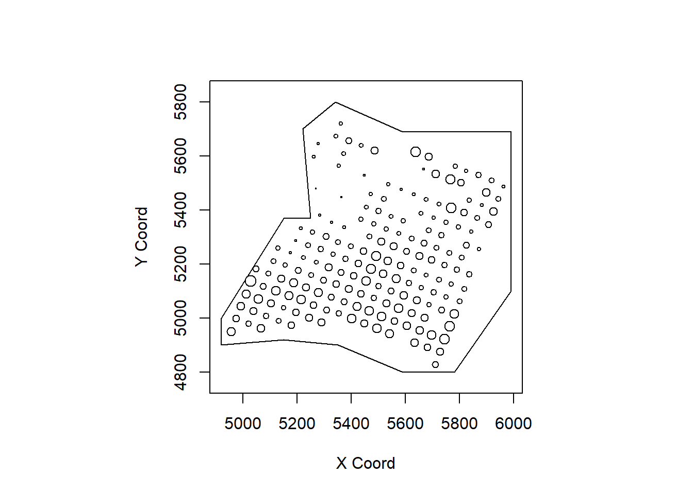

Week 8: Geostatistics–Estimation
1 Introduction
- In this Lab, we will learn
- Semivariogram
- MLE
2 Soil Data & Semivariogram
2.1 Soil Example
\(Z(\mathbf{s})\): calcium content in soil at \(\mathbf{s}\).
library(geoR)
data(ca20)
points(ca20,cex.min = 0.2, cex.max = 1.5, pch = 21)
Note: The geoR package was archived by R, but you can still manually install the previous packages (https://cran.r-project.org/web/packages/geoR/index.html). I think (or hope) that the author will update the package and therefore the package will be un-archived. — Information on May 5th, 2022.
2.2 Semivariogram
plot(variog(ca20, option="bin", max.dist=510),
xlab = "h", ylab = "gamma(h)")## variog: computing omnidirectional variogram
Here, the function variog is ued to calcuate the semivariogram in our slides.
- Function: variog
- argument
- opition: “bin”
- max.dist: maximum distance for the semivariogram
3 MLE
3.1 MLE: Initial Value
“Eye-fit”
plot(variog(ca20, option="bin", max.dist=510),
xlab = "h", ylab = "gamma(h)")
lines.variomodel(seq(0, 510, l = 100),
cov.pars = c(100, 120),
cov.model = "mat", kap = 0.5, nug = 30)Based on the plot, the initial value \((\sigma^2, \phi, \tau^2) = (100, 120, 30)\).
3.2 MLE: Function
# trend - constant mean
m1 = likfit(ca20, ini = c(100, 120), nug = 30)# trend - constant mean
summary(m1)## Summary of the parameter estimation
## -----------------------------------
## Estimation method: maximum likelihood
##
## Parameters of the mean component (trend):
## beta
## 50.0668
##
## Parameters of the spatial component:
## correlation function: exponential
## (estimated) variance parameter sigmasq (partial sill) = 135.2
## (estimated) cor. fct. parameter phi (range parameter) = 159.5
## anisotropy parameters:
## (fixed) anisotropy angle = 0 ( 0 degrees )
## (fixed) anisotropy ratio = 1
##
## Parameter of the error component:
## (estimated) nugget = 16.77
##
## Transformation parameter:
## (fixed) Box-Cox parameter = 1 (no transformation)
##
## Practical Range with cor=0.05 for asymptotic range: 477.7842
##
## Maximised Likelihood:
## log.L n.params AIC BIC
## "-632.6" "4" "1273" "1286"
##
## non spatial model:
## log.L n.params AIC BIC
## "-680.2" "2" "1364" "1371"
##
## Call:
## likfit(geodata = ca20, ini.cov.pars = c(100, 120), nugget = 30)- Results of output
- Spatial-dependence parameter estiamtes: \((\sigma^2, \phi, \tau^2)\)
- no standard error is provided.
- cov.pars: \((\sigma^2, \phi)\)
- nugget: \(\tau^2\)
- kappa
The output of MLE
# cov.pars
m1$cov.pars
# partial sill
m1$sigmasq
m1$phi
# nugget
m1$nugget## [1] 135.1726 159.4883
## [1] 135.1726
## [1] 159.4883
## [1] 16.76522- The arguments of function likfit
- argument
- cov.model: “exp” (default), more options see cov.pars
- Fixed or Estimated: fix.nugget = FALSE, fix.kappa = TRUE, kappa =0.5
- Initial value: ini.cov.pars, nugget
- Remarks: we have 4 parameters: nugget \(\tau^2\), partial sill \(\sigma^2\), range parameter \(\phi\), smooth parameter \(\kappa\) ( \(\nu\) in our slide. )
- Function allow us either to pre-specify (fix) or estimate it
- Most of the time, \(\kappa\) is fixed.
Here are some exmaple:
- Example 1: no specification. “likfit(ca20, ini = c(100, 200), nug = 50)”
- Exp model (\(\kappa\) = 0.5 fixed).
- To estimate: \(\tau^2\), \(\sigma^2\), \(\phi\)
- Example 2: no specification. “likfit(ca20, ini = c(100, 200), nug = 50, fix.nugget=TRUE)”
- Fixed: \(\kappa\) = 0.5, nugget \(\tau^2 = 50\)
- To estiamte: \(\sigma^2\), \(\phi\)
3.3 Spatial Trend
3.3.1 Two ways
- Specify directly in function like “likfit”:
fit = likfit(ca20, ini = c(100, 60), trend = ~altitude) - Specify it through function “trend.spatial”: See below
- Usage: only to specify, not computing involved in this function.
trend.spatial(trend, geodata)
- Argument trend
- trend = “cte”: constant mean
- trend = ~altitude: \(\mu(s)=\beta_0+\beta_1 altitude\)
- Other options: “1st”, “2nd”, see help files for more details
4 Geodata format
The package geoR requires geodata object, and in this part, we show how to create geodata object
- geodata object: a list with two obligatory components
- coords: a matrix with the two-dimensional coordinates of the sampling locations
- data: a vector (vectors) giving the corresponding measured value(s) at each of sampling location.
4.1 Create geodata
- Converting a data.frame to geodata: many functions in geoR requires geodata format.
- as.geodata(obj, coords.col = 1:2, data.col = 3, covar.col = NULL, covar.names = “obj.names”)
- coords.col = 1:2 (default): the first two columns are x-axis and y-axis.
- data.col = 3 (default): the column for the response (\(Z(\mathbf{s})\)). The default is the third column, but you can specify it. In the following example, the 5th column is for the response.
- covar.col: columns for covariates.
library(geoR)
data(camg) # data.frame format
# geodata format
geocamg = as.geodata(camg, data.col=5, covar.col=c(3,6),
covar.names = c("elevation", "mg20"))